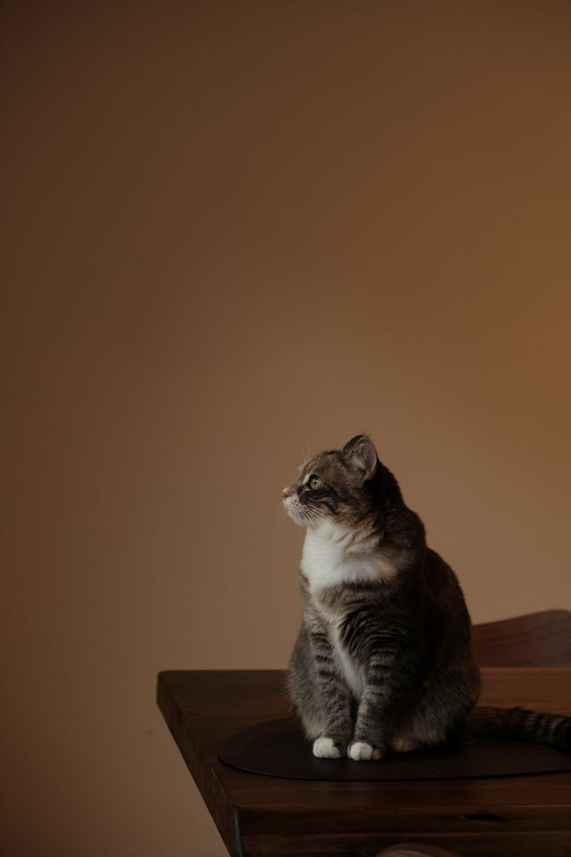
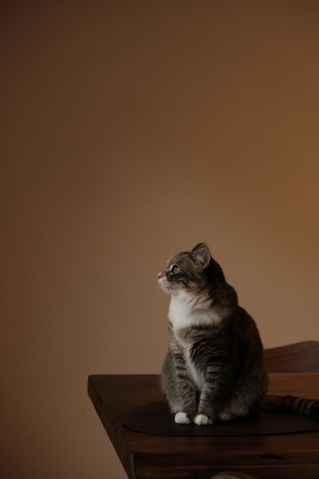

як заварити чай
- Закип´ятити воду
- Засипати чай в кружку
- Налити в кржку окріп
- Чекати і насолоджувати чайом
як заварити чай
список визначень
- HTML
- — стандартизована мова розмітки документів для перегляду вебсторінок у браузері.
- CSS
- — це спеціальна мова стилю сторінок[en], що використовується для опису їхнього зовнішнього вигляду.
 


Пес барсік
Любить смаколики